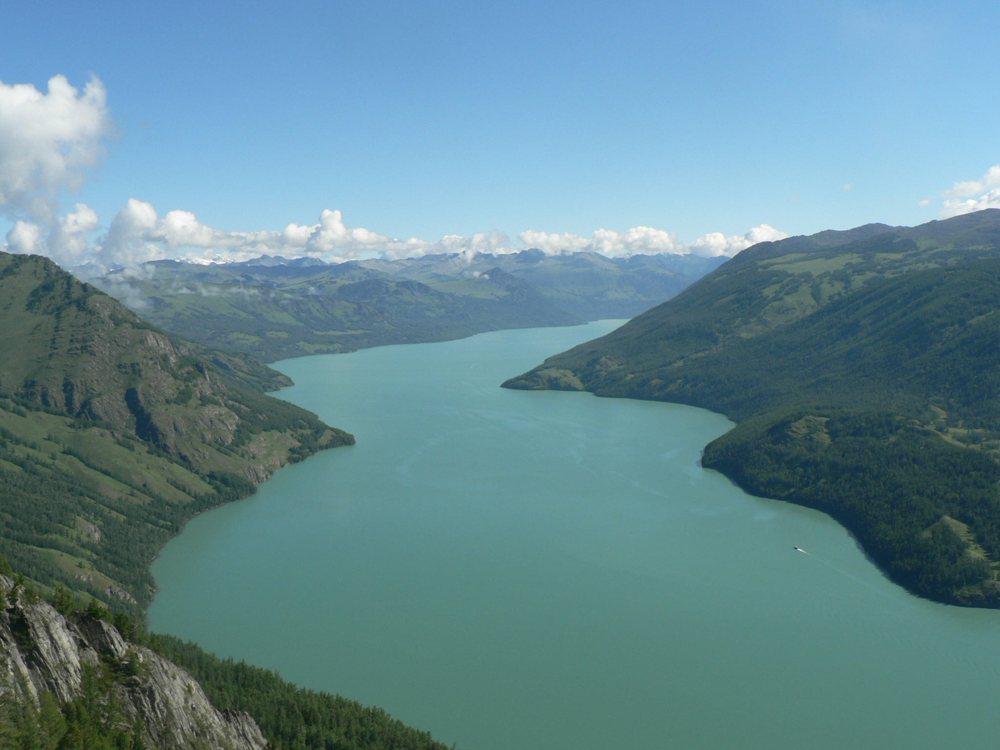
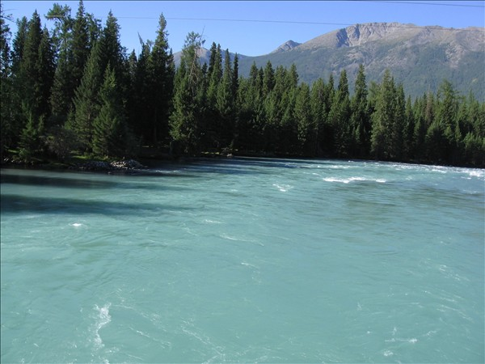

Kanas Lake is a stunning alpine lake in the Altai Mountains, in the north of Xinjiang, China. The lake and its surrounding area is home to diverse wildlife and vegetation, making it an ideal spot for nature enthusiasts. The best time to visit Kanas Lake is during the summer and early autumn months when the weather is pleasant and the scenery is at its best. Learn more about other spots in Xinjiang.
 